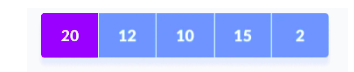
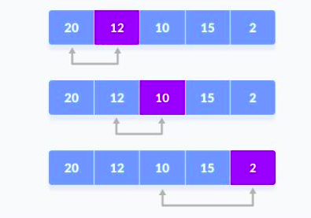
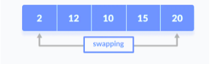
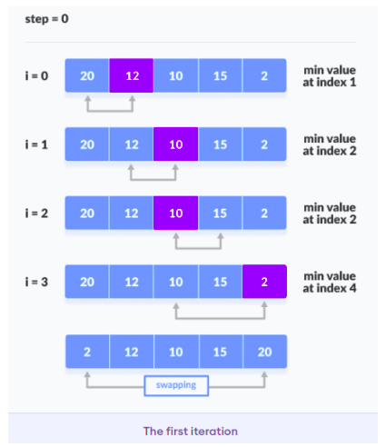
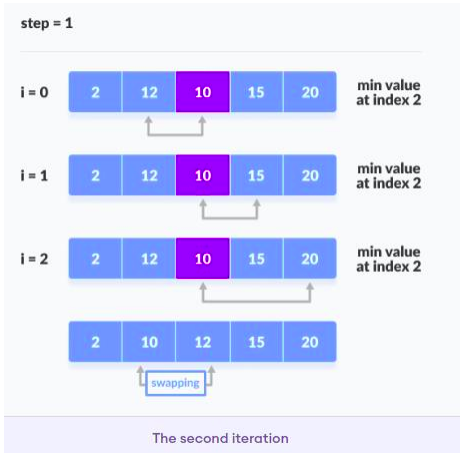
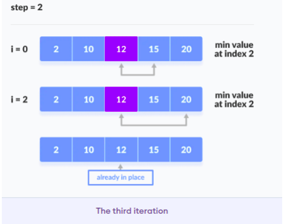
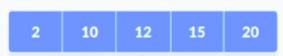

Implementation
Selection sort is a sorting algorithm that selects the smallest element from an unsorted list
in each iteration and places that element at the beginning of the unsorted list.
Step 1 : Select the first element of the list
(i.e., Element at first position in the list).
Step 2 : Compare the selected element with all the other elements in the list.
Step 3 : In every comparision, if any element is found smaller than the selected element (for Ascending order), then both are swapped.
Step 4 : Repeat the same procedure with element in the next position in the list till the entire list is sorted.
Step 2 : Compare the selected element with all the other elements in the list.
Step 3 : In every comparision, if any element is found smaller than the selected element (for Ascending order), then both are swapped.
Step 4 : Repeat the same procedure with element in the next position in the list till the entire list is sorted.
Consider an unsorted array
- Set the first element as minimum.
-
Compare minimum with the second element. If the second element is
smaller than minimum, assign the second element as minimum.
Compare minimum with the third element. Again, if the third element is smaller, then assign minimum to the third element otherwise do nothing. The process goes on until the last element. - After each iteration, minimum is placed in the front of the unsorted list.
- For each iteration, indexing starts from the first unsorted element. The same process keeps repeating until all the elements are placed at their correct positions.
- A pictorial representation of the entire sorting process.
- Finally, we get the sorted array as-






